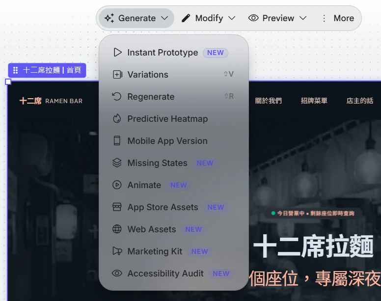
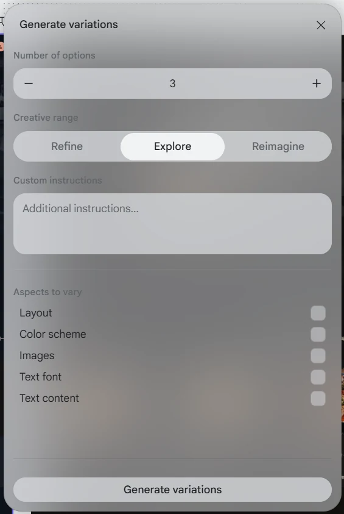
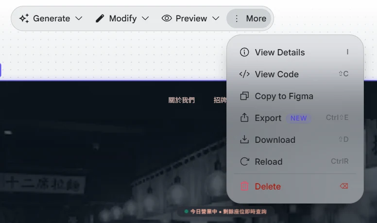

讓 AI 先畫一版
你負責挑
第十單元｜AI 切版工具：Google Stitch。討論③：無程式碼平台 vs. AI 切版
- Course
- 互動媒體製作（選課號 01544）
- Class
- 進修四技多遊 4 年甲班 · G501
- Week
- 11/16 – 11/22
- Instructor
- 洪明顯
- 本週型態
- 影片 60 分＋面授 1 節
- 本週評量
- 討論③
操作方式：點下方「上一頁／下一頁」，或使用鍵盤 ← → 翻頁。
本單元目錄
期中之後，課程從「租來的店面」（Google Site）走向「自己的店面」（自己的程式碼）。這週是起點。
看完這支影片，你能夠……
說出 Google Site 與 AI 切版各自適合什麼情況
把自己的 品牌企劃 轉成 Stitch 提示詞，產出首頁第一版
用 W6 的 五個看點 挑出第一版的問題，改一次提示詞
以 正確格式匯出，並在檔案裡認出 Tailwind 與區塊
老闆說：「先讓我看個樣子」
十二席拉麵的老闆想要一個「真正屬於自己的」官網。他不懂程式，只說了一句：「你先做一版給我看，我再告訴你喜不喜歡。」
設計師先畫稿
畫一張畫面要半天，改一次又半天，然後才交給工程師寫程式。
AI 一分鐘畫一版
你用文字描述，Stitch 直接畫出畫面，還附上程式碼。
挑的人
AI 可以一直畫，但「哪一版對」只有懂品牌的你能決定。
租店面 vs. 自己的店面
Google Site 像百貨公司的專櫃：裝潢有規定、很快能開張，但牆不能拆。AI 切版給你的是一份「施工圖」：可以照自己的意思改，但要自己顧。
| 比較 | Google Site（W7–W9） | Google Stitch（W10 起） |
|---|---|---|
| 你拿到什麼 | 一個網址，內容在 Google 的平台上 | 畫面＋HTML 程式碼檔案 |
| 版面自由度 | 只能用平台提供的區塊 | 想改什麼都可以（前提是看得懂） |
| 上手速度 | 最快，拖拉就好 | 快，但要會寫提示、會挑 |
| 上線方式 | 按「發布」 | 要自己部署（W14：GitHub Pages／Netlify） |
| 常見問題 | 長得跟別人很像 | 風格跨頁不一致、字型只能從清單裡選 |
Stitch 能做什麼、不能做什麼
Stitch 是 Google Labs 的實驗性工具。實驗性的意思是：介面可能每個月都長得不一樣，但核心流程不會變。
- 用文字（中文也可以）描述，生成網頁或 App 畫面
- 上傳參考圖，讓它照著風格畫
- 畫面滿意後匯出程式碼（HTML＋Tailwind CSS）
- 免費，只要 Google 帳號；每月有生成次數上限
- 多頁風格一致：第二頁常常換了配色或字型
- 字型選擇有限：只能用內建清單裡的字型。Noto Sans TC 有，芫荽（Iansui）這類手寫風中文字型沒有，要改程式碼才能用（W11）
- 真正的功能（訂位、付款）：它只畫「樣子」
提示詞不用想，從企劃書抄
你在 W1 寫的品牌企劃，就是最好的提示詞素材。AI 不認識你的品牌，你給它多少，它就畫多少。
五個欄位，照填就好
- 品牌是什麼：一句話說明（賣什麼、在哪裡）
- 給誰看：目標客群
- 調性三形容詞：W1 定的那三個
- 要有哪些區塊：照 W3 的資訊架構
- 裝置與配色：手機優先、主色／字色
# 十二席拉麵｜Stitch 提示詞範例 幫我設計一個拉麵店官網首頁（Web）。 品牌：十二席拉麵，台中巷弄裡只有 12 個座位的深夜拉麵店。 客群：下班後 21:00 以後想吃宵夜的上班族。 調性：安靜、溫暖、職人感。 區塊： 1. 首屏：店名＋今日營業狀態＋開啟地圖按鈕 2. 菜單（3 道招牌） 3. 店主的話 4. 營業時間與地址 5. 頁尾 風格：深色背景 #111820，米白文字 #E8DDC7， 強調色 #E05A33；手機版優先；文字用繁體中文。
介面導覽① 起始畫面：從哪裡開始
登入 Stitch 後看到的第一個畫面。英文看不懂沒關係，對照編號就好；本課只會用到標「本課用」的幾個。
| # | 介面英文 | 中文意思 | 用途 | 本課 |
|---|---|---|---|---|
| 1 | Start with your design | 從你的設計開始 | 匯入既有的設計（截圖、設計稿），讓 Stitch 接著做 | 選用 |
| 2 | Blank project | 空白專案 | 開一張空白畫布，什麼都不生成 | 不用 |
| 3 | What responsive web experience shall we design? | 「想設計什麼樣的響應式網頁？」 | 提示詞輸入框：貼上 10.5 寫好的五欄位提示詞 | 本課用 |
| 4 | + | 附加檔案 | 上傳參考圖或手繪草圖，讓它照著風格畫 | 選用 |
| 5 | App ／ Web | 手機 App ／ 網頁 | 選畫面類型。一定要選 Web，選 App 會畫成手機 App 介面 | 本課用 |
| 6 | 調色盤圖示 | 主題 | 生成前先指定配色主題（和 10.13 的 Theme 面板是同一套） | 選用 |
| 7 | Speed ▾ | 生成模式 | Speed＝速度優先；下拉可換成較慢、較精細的模式 | 維持預設 |
| 8 | 麥克風圖示 | 語音輸入 | 用說的輸入提示詞 | 選用 |
| 9 | ↑ | 送出 | 開始生成。每按一次都會用掉額度 | 本課用 |
示範① 從提示詞到第一版
跟著影片看一次完整流程。按鈕名稱如果和影片不同，找「意思一樣」的按鈕就對了。
開啟 Stitch
到 stitch.withgoogle.com，用 Google 帳號登入
選 Web
輸入框下方選 Web（不是 App，見 10.6）
貼上提示詞
把 10.5 填好的五欄位整段貼上
等它畫
約 1 分鐘，畫面會出現在畫布上
先別急著匯出
下一步是「挑毛病」
跟做① 生成你自己的首頁
請暫停影片，打開你 W1 的品牌企劃，做完再繼續。
- 用 10.5 的五欄位，把自己的品牌寫成提示詞
- 在 Stitch 生成首頁第一版
- 截圖存檔，檔名：
w10_v1.png - 把提示詞全文另存一份（討論③要貼）
用 W6 的五個看點挑毛病
第一版通常「看起來很厲害」，但仔細看都有問題。拿 W6 的五個看點逐一檢查，一次只改一件事。
| 看點 | 常見問題 | 改提示詞的寫法 |
|---|---|---|
| ① 視覺層級 | 店名和標語一樣大 | 「店名放大到最顯眼，標語縮小」 |
| ② 閱讀動線 | 營業時間被放到最底下 | 「營業狀態移到首屏店名下方」 |
| ③ 首屏三問 | 首屏只有大圖，看不出賣什麼 | 「首屏要看得出是拉麵店、有沒有開、怎麼去」 |
| ④ 可視性 | 灰字配深灰底，看不清楚 | 「內文改用米白 #E8DDC7，確保對比足夠」 |
| ⑤ 一致性 | 按鈕兩種顏色、兩種圓角 | 「所有按鈕統一用 #E05A33、圓角 4px」 |
Stitch 提示詞指南① 先粗後細，用形容詞定調
Stitch 介面全英文，但它真正的「操作介面」其實是提示詞框。Google 官方論壇整理過一份寫法指南，這一段把重點換成中文、套進十二席拉麵。
一句話說「這是什麼網站」，讓 Stitch 先給整體骨架。適合還沒想清楚或頁面很多的專案，之後再一頁一頁細修。
# 先粗
一個深夜拉麵店的官網。
A website for a late-night ramen shop.一次講清楚「給誰、做什麼事」。適合企劃已完成的同學，也就是 10.5 的五欄位寫法。
# 先細
一個深夜拉麵店官網，讓下班的上班族
查看今日營業狀態、招牌菜單、開地圖導航。形容詞決定「氣氛」：配色、字型、圖片都跟著變
| 你寫的形容詞 | Stitch 通常會往哪裡走 | 適合的品牌 |
|---|---|---|
| 安靜、溫暖、職人感 quiet, warm, artisanal | 深色底、暖色強調、留白多、襯線或細字 | 十二席拉麵、手沖咖啡 |
| 活潑、鼓勵的 vibrant, encouraging | 高彩度、大按鈕、圓角、插畫感 | 運動、兒童、手搖飲 |
| 極簡、專注的 minimalist, focused | 大量留白、單一主色、細線條 | 工作室、作品集、冥想 |
提示詞指南② 一個畫面、一次只改一兩件
第一版生成後，Stitch 最怕「一句話塞五個要求」。官方建議每次只針對一個畫面或一個元件，做一到兩個修改，並且同時說清楚「改什麼」和「怎麼改」。
修改句型：照這個順序填
- ✗「把首頁弄好看一點」→ 沒說改哪裡、改成怎樣
- ○「在首頁的頁首，加一個搜尋列」
- ○「把菜單頁的主要按鈕放大，改成品牌主色
#E05A33」
# 十二席拉麵：分三次送出，不要合成一句 第 1 次：在首頁的首屏，把店名放大成最顯眼的文字。 第 2 次：在首頁的首屏，店名下方加上「今日營業中 21:00–02:00」。 第 3 次：把首頁所有按鈕改成 #E05A33、圓角 4px。
論壇使用者踩過的坑
有人一次要求加篩選器、改標題、換圖示，結果 Stitch 把整個版面重做。拆成單一修改後才穩定。
Stitch 不一定記得上一版長怎樣，偶爾還會被重設。每改好一步就截圖，檔名 w10_v2.png、v3……
有人貼了超過 5,000 字的提示詞，部分區塊直接消失。第一次用簡單白話，複雜的留到逐頁修改時再加。
提示詞指南③ 配色、字型、圖片、語言怎麼下指令
指南裡的配色、字型、圖片、語言修改，全部都可以用提示詞完成。配色和字型另外也能用 Theme 面板點選（見 10.13）；其他功能找不到按鈕時，直接用打字的就對了。
| 想改 | 兩種講法 | 十二席拉麵範例（中英皆可貼） |
|---|---|---|
| 配色 | 指定顏色，或描述氣氛 | 「把主色改成 #E05A33」 「整體改成溫暖、昏黃燈光的配色」 Change primary color to #E05A33. |
| 字型 | 說字型「類型」，不用說字型名稱 | 「標題改用襯線字型，內文用無襯線」 Change headings to a serif font. |
| 邊框／圓角 | 指定元件＋數值 | 「所有按鈕改成全圓角」 「輸入框加 1px 米白實線邊框」 |
| 一句話定主題 | 產品類型＋字型＋主色 | 「拉麵店官網：內文用襯線字，強調色用朱紅」 |
| 圖片 | 用畫面上的內容「點名」是哪張圖 | 「把首頁所有菜單圖片的背景改成深木紋」 「菜單頁『豚骨拉麵』那張圖，改成俯拍、有蒸氣」 |
| 換主題時連圖一起換 | 要明講圖片和圖示也要跟著變 | 「主題改成深藍色，所有圖片與圖示也配合新配色」 |
| 語言 | 直接要求切換 | 「把所有文案和按鈕文字改成繁體中文」 |
介面導覽② 不想打字改配色？用 Theme 主題面板
10.12 的配色、字型也可以用點的。點畫布上的主題卡（下圖左側標著 Midnight Ramen 的那張），右側就會打開 Theme 面板。
| # | 介面英文 | 中文意思 | 用途／十二席拉麵怎麼設 |
|---|---|---|---|
| 0 | 主題預覽卡 | 主題總覽 | 一次看到這套主題的色票、字型、按鈕、圖示長什麼樣子 |
| 1 | 主題名稱＋鉛筆 | 重新命名 | 改成好認的名字，例如 Midnight Ramen |
| 2 | Theme ／ DESIGN.md | 主題 ／ 設計規格文件 | Theme 用點選調整；DESIGN.md 是同一套規格的文字版，可以複製給其他 AI 參考 |
| 3 | Mode：Light ／ Dark | 淺色 ／ 深色模式 | 十二席是深夜拉麵店 → Dark |
| 4 | Seed Color | 種子色 | 輸入一個品牌主色，Stitch 自動推算整套配色 → 填 #E05A33 |
| 5 | Color theme | 配色方案 | 內建的配色組合；自己改過色票就會顯示 Custom（自訂） |
| 6 | Color Palette：Primary ／ Secondary ／ Tertiary ／ Neutral | 主色 ／ 輔色 ／ 第三色 ／ 中性色 | 主色＝按鈕與強調 #E05A33；輔色＝米白文字 #E8DDC7；中性色＝深色底 #111820 |
| 7 | Font | 字型 | 標題、內文、標籤用的字型。中文選 Noto Sans TC 就能正常顯示；清單裡沒有的字型（如芫荽）W11 用程式碼換 |
| 8 | Save ／ Save & Apply | 儲存 ／ 儲存並套用 | Save 只存主題；Save & Apply 才會把新主題套到畫面上 |
#0090BA 是 Stitch 自己加的，十二席的企劃書裡沒有。要留還是改成企劃書的顏色？這就是 W16 互評會檢查的「企劃一致性」。看不懂英文？元件中英對照表
指南特別提醒：用 UI/UX 的專有名詞、明確指出是「哪一個元件」，Stitch 才不會猜錯。下面是最常用的一批，寫提示詞時可以中英並列。
| 英文（寫進提示詞） | 中文 | 在十二席拉麵首頁是哪裡 |
|---|---|---|
| header / navigation bar | 頁首／導覽列 | 最上方放店名與選單連結的那一條 |
| hero section | 首屏主視覺區 | 一打開就看到的大圖＋店名＋營業狀態 |
| call-to-action (CTA) button | 行動呼籲按鈕 | 「開啟地圖」「立即訂位」這種要人按的按鈕 |
| primary / secondary button | 主要／次要按鈕 | 朱紅實心按鈕 vs. 只有外框的按鈕 |
| card layout | 卡片式排版 | 三道招牌菜各自一個方塊 |
| input field / form | 輸入框／表單 | 訂位表單裡填姓名、人數的欄位 |
| icon / illustration | 圖示／插圖 | 地址旁的小地標、營業時間旁的時鐘 |
| footer | 頁尾 | 最底下的地址、社群連結、版權 |
| serif / sans-serif | 襯線／無襯線字型 | 明體感 vs. 黑體感 |
| rounded corners / border | 圓角／邊框 | 按鈕的四個角、輸入框外框 |
介面導覽③ Generate 選單：畫好之後還能做什麼
點選畫布上的畫面（左上角會出現紫色標籤，例如「十二席拉麵｜首頁」），上方會出現工具列：Generate 生成、Modify 修改、Preview 預覽、More 更多。先看 Generate。

NEW 的是新功能，位置和名稱最容易變動。| 選項 | 中文意思與用途 | 本課 |
|---|---|---|
| Instant Prototype | 即時原型：把畫面變成可以點的試玩版 | 選用 |
| Variations ⇧V | 變化版本：一次產生多個版本來比較（下一頁） | 本課用 |
| Regenerate ⇧R | 重新生成：同樣的提示詞再畫一次，結果隨機、會扣額度 | 少用 |
| Predictive Heatmap | 預測熱圖：AI 預測使用者視線會落在哪裡，可用來檢查視覺層級與首屏 | 推薦 |
| Mobile App Version | 轉成手機 App 版本 | 不用 |
| Missing States | 補齊缺少的狀態，例如載入中、空白、錯誤畫面 | 不用 |
| Animate | 為畫面加上動畫 | 不用 |
| App Store Assets | App 上架用的宣傳圖 | 不用 |
| Web Assets | 網站用的周邊圖像素材 | 選用 |
| Marketing Kit | 行銷素材包 | 不用 |
| Accessibility Audit | 無障礙檢查：找出對比不足、字太小等看不清楚的問題 | 推薦 |
介面導覽④ Variations：讓 AI 一次畫幾版給你挑
Generate › Variations 會打開這個視窗。它就是「一次只改一件事」的按鈕版：只勾一個要變的面向，就能並排比較。

| 介面英文 | 中文意思與用途 |
|---|---|
| Number of options −／+ | 要產生幾個版本。每一版都算額度，2–3 版就夠 |
| Creative range | 變化幅度： Refine 微調（保留架構，小幅修改） Explore 探索（中等變化，預設值） Reimagine 重新想像（大改，可能整個換掉） |
| Custom instructions | 自訂指示：補一句話，例如「保留首屏結構，只換配色」 |
| Aspects to vary | 要變動的面向（勾選）： Layout 版面／Color scheme 配色／Images 圖片／Text font 字型／Text content 文字內容 |
| Generate variations | 開始產生 |
數量 3／幅度 Refine／只勾 Color scheme／自訂指示：「保留深色背景與朱紅按鈕」。三版只差在配色，最好挑。
勾了它，AI 可能改掉店名、營業時間、菜單價格這些企劃書上的真實資料。文字請自己改。
跟做③ 用指南改三輪，順便學會「改壞了怎麼辦」
拿你 10.8 的第一版，照 10.9 挑出的問題，用 10.11 的句型分三次修改。每一輪都截圖。
- 第 1 輪：改一個「版面」問題（例：營業狀態移到首屏）→ 存
w10_v2.png - 第 2 輪：改一個「主題」問題（例：按鈕統一主色）→ 存
w10_v3.png - 第 3 輪：改一張「圖片」或「語言」→ 存
w10_v4.png - 三句提示詞全文另存，討論③要貼
結果不對時，依序試
- 換句話說：同一個意思換個講法
- 縮小範圍：從「首頁」縮到「首屏的店名」
- 換成英文元件名：查 10.14 對照表
- 退回上一版：用截圖對照，回到還正常的那一版再改
- 讓 AI 多畫幾版：用 Variations（10.16）只勾一個面向，挑最接近的
檢核點：哪一句提示詞最可能讓 Stitch 把整頁重畫？
「首頁加篩選器、標題改成店名、圖示換成拉麵碗、背景改深色」——一句塞了四件事。拆成四次送出，每次只動一個元件。
資料來源：Google AI Developers Forum〈Stitch Prompt Guide〉（2025/05）及討論串回覆，本講義改寫為中文並以十二席拉麵為例。
介面導覽⑤ More 選單：看程式碼、匯出都在這裡
工具列最右邊的 ⋮ More。滿意的版本確定後，就從這裡進入下一步「匯出」。

| 選項 | 中文意思與用途 | 本課 |
|---|---|---|
| View Details I | 檢視細節：這個畫面的相關資訊 | 選用 |
| View Code ⇧C | 檢視程式碼：直接看 HTML，先找找 Tailwind 那行 <script> | 本課用 |
| Copy to Figma | 複製到 Figma 繼續編輯 | 選用 |
| Export Ctrl⇧E | 匯出：打開匯出選單，選 HTML 或 .zip（見 10.19） | 本課用 |
| Download ⇧D | 下載：內容和 Export 相同，兩個用哪個都可以 | 本課用 |
| Reload | 重新載入：畫面顯示怪怪的時候刷新預覽 | 需要時 |
| Delete | 刪除這個畫面。刪掉前先確認有截圖備份 | 小心 |
<html>、<section> 這些 W3 學過的標籤。匯出後打開檔案，如果看到的是 import React 開頭，代表匯出格式選錯了。示範② 匯出：選對格式最重要
從 More › Export（見 10.18）打開匯出選單。選單裡有很多選項（Figma、AI Studio、React、Flutter……）。這門課只要一種：HTML（Tailwind）程式碼，或包好的 .zip。
HTML／Tailwind 程式碼或 .zip 下載。雙擊 .html 就能用瀏覽器打開，W11 可以直接拖進 VS Code。
React、Vue、Flutter、SwiftUI。這些需要另外安裝環境才能執行，雙擊打不開，W11 會卡住。
<!-- 你應該會在檔案開頭附近看到這一行 --> <script src="https://cdn.tailwindcss.com"></script> <!-- 看到它就代表：這份檔案的樣式是用 Tailwind 寫的（W5 學過怎麼讀） -->
跟做② 讀懂你拿到的檔案
把匯出的檔案用 vscode.dev 打開（下週才裝桌面版）。不用改，只要找得到。
- 找到 Tailwind 的
<script>那一行 - 找到首屏區塊（通常是第一個
<section>或<header>） - 找一個按鈕，抄下它的 class，用 W5 的 Tailwind 解碼表翻成白話
- 找到設定字型的地方：
fonts.googleapis.com那行<link>，以及寫著字型名稱的font-family（或fontFamily）。W11 就是改這兩處
<a class="bg-[#E05A33] text-white px-6 py-3 rounded">開啟地圖</a> <!-- bg-[...] 底色 text-white 白字 px-6 / py-3 左右、上下內距 rounded 圓角 -->
檢核點：Stitch 字型清單裡沒有芫荽，還能用嗎？
可以。芫荽在 Google Fonts 上找得到，只要在程式碼裡 ① 加一行載入字型的 <link> ② 把 font-family 改成 'Iansui'。兩處都要改：只載入、沒指定，畫面不會變。這就是 W11 的核心示範，現在先截一張修改前的圖，下週對比。
為什麼期末只要「主頁＋一頁」
Stitch 每畫一頁都像換了一位設計師：第一頁米白字，第二頁可能變成純白字、按鈕變圓。
主頁
用 Stitch 產出，這週完成。期末展示的主體仍是 Google Site。
一頁手改的網頁
W11 匯入 VS Code 換字型 → W12–W13 微調 → W14 部署上線。
本週任務與討論③
- 貼作品：Stitch 首頁截圖（修改前／後各一張）＋你的提示詞
- 提出具體問題：用 10.3 的比較表，說出你的品牌比較適合哪一種、卡在哪裡
- 回應兩位同學：給一個可以執行的建議或延伸提問
我覺得 Stitch 比較方便，做出來比較好看。
我的手搖飲品牌在 Google Site 只能用固定的三欄卡片，菜單看起來像公告。Stitch 第一版首屏沒有「今日推薦」，我加了一句提示後才出現。我的問題是：第二頁換成白色背景，要怎麼讓它跟首頁一致？